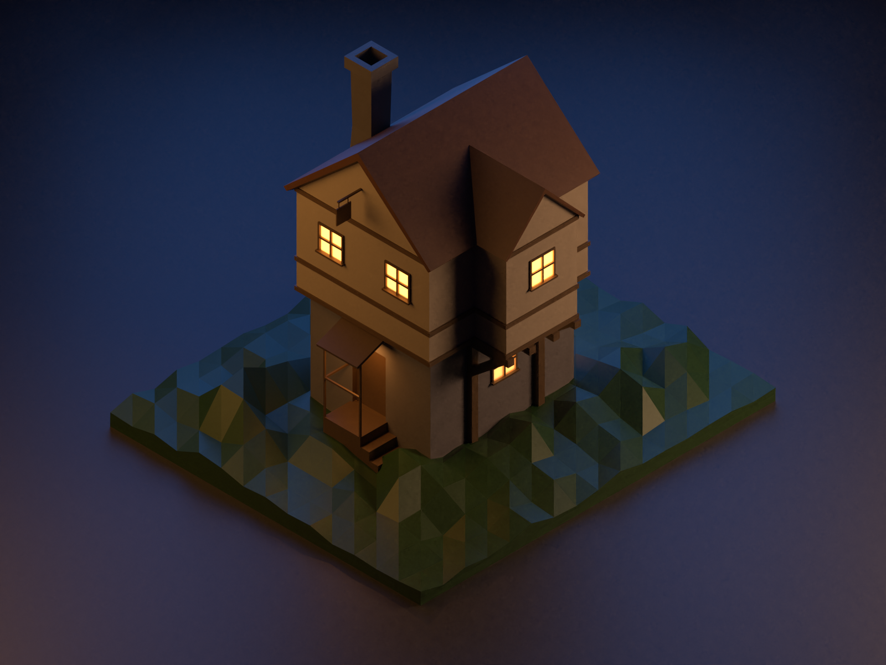
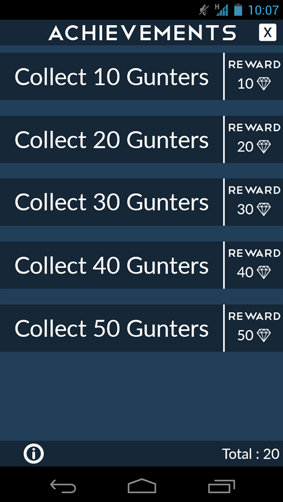
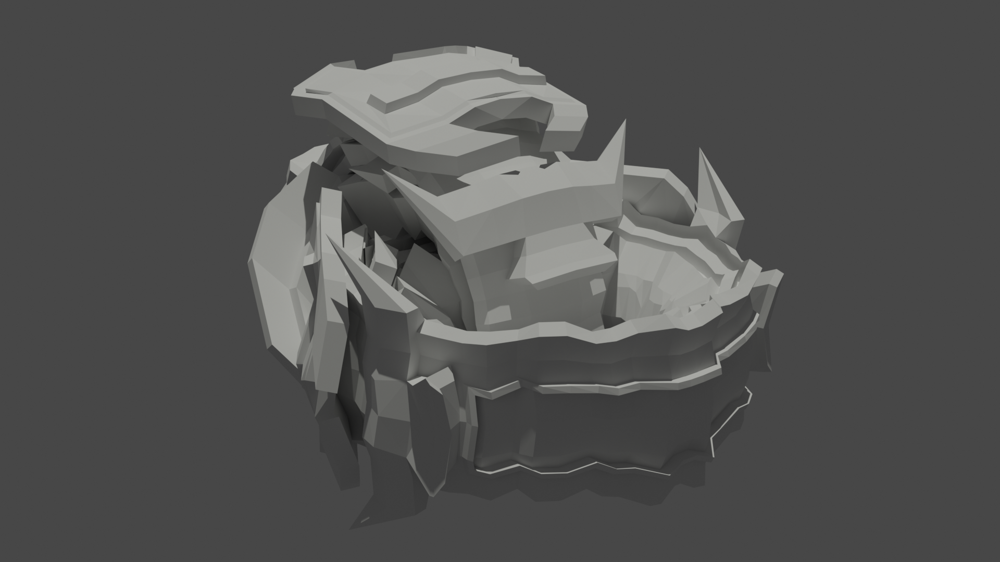
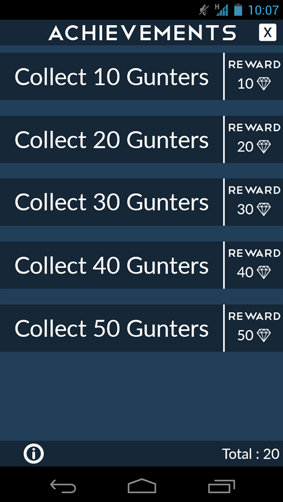
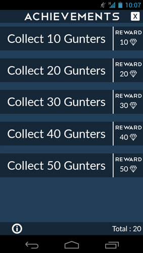

My name is Lesley Oudshoorn.
I'm a 22 year old Media Developer graduate trying to get more into the design aspect of things.
Ever since I got in touch with the internet, television and everything to do with media I was fascinated by it.
Media is a big part of my life now and I love to design and make applications that will be used.
Furthermore I like to challenge myself and broaden my horizon.
Skills
Photoshop
Illustrator
Blender
Premiere pro
Wordpress
HTML
CSS
PHP
Javascript
Jquery
Blender
Cyberpunk
Blender
House
Blender
Donut
Photoshop
Poster
Photoshop
Gunter clicker
Exam Project
CRM Plugin
Game Design
Penguin Adventures
Game Design
Infectie Genezing VR
Blender
Tower
Blender
Spaceship
Brede Basisopleiding
Opdrachten
Cyberpunk
An alleyway with a Cyberpunk theme made in Blender
And here are different snippets
House

A low poly medieval house made in Blender
Donut
A Donut made in Blender to learn the basics of the program.
The same scene but with tweaked lighting
Old Poster
This was a poster we had to make a fictional school assignment
It had to be in the theme of an oldschool boxing poster and I came up with this idea with the characters from Adventure Time.
Made in Photoshop
Gunter Clicker
A fictional school assignment that had to be a mobile application.
The design is inspired by idle click games.
Made in Photoshop
Here are the individual pages

Exam Project
My exam project was to make a CRM System (Customer relationship management) plugin for Wordpress.
I had to make a plugin that would make it easier to see all the companies in one place with their information.
The information consists of a contact, notes, projects and documents.
The plugin was written in HTML / CSS , PHP and Javascript
Penguin adventures
Game rules
Er zijn bepaalde pinguins met speciale krachten zoals de main character heeft een speciale kracht als hij dood gaat gaat hij niet echt dood maar komt in de afterlife en moet zijn weg terug vinden naar zijn lichaam.
De pinguins hebben ook ijs magie dat ze kunnen gebruiken met hun handen. Door relics die ze vinden kunnen ze de krachten sterker maken.
De wereld is door een mysterieuze kracht veranderd in allemaal kleine eilandjes.
Door de kracht is de natuur getransformeerd en is alles sneller gaan groeien alles is nu overgrown.
Dieren zijn ook gemuteerd en zijn nu aggresiever.
Er zijn steden opgericht door pinguins die niet terug naar huis willen en elke stad heeft zijn eigen leider.
Als pinguins zonder kracht doodgaan moeten ze op een speciale manier worden begraven anders laat het lichaam negatieve energie achter de negatieve energie zorgt er voor dat er sterkere enemys spawnen in het gebied. Ook kunnen resources corrupt raken. Ze hebben 24 uur de tijd om actie te ondernemen. Als ze niet worden begraven en de negatieve energie is vrijgekomen kan je met een speciale late game item de corruptie weghalen.
De dag/nacht cycle is elke dag anders. De nacht is gevaarlijker omdat dan de predators naar boven komen en gaan jagen op de pinguins.
De regen moet ook ontweken worden omdat deze gevaarlijk is. De regen is een soort acid en dit is slecht voor de pinguins.
Er zijn ook pinguins die op pinguins jagen voor treasures die ze hebben gevonden.
Story
De wereld is door een mysterieuze kracht veranderd in vliegende eilandjes de main character word wakker in een zand iglo op een groot eiland waar al een kleine beschaving is opgebouwd de leider van de beschaving wilt dat al de eilanden weer worden gereconnect.
Reconnect
De main character krijgt dit als opdracht om te doen. De leider geeft een speciaal voorwerp aan de main character dit voorwerp moet worden gebruikt op de eilanden om ze te reconnecten. Hierna begint het avontuur om alle eilandjes weer een te maken. Elk eilandje heeft een apparaat waar je je voorwerp moet in steken en dan verschijnt er een brug tussen de eilandjes. Het doel is om van de woestijn eilandjes terug te werken naar ijs eilandjes. Onderweg komt de main character nog kleine beschavingen tegen waar geslapen kan worden en getrade kan worden voor armour/equipment.
Enemy
Er zijn ook eilandjes met gevaarlijke pinguins die jou treasures willen stelen die je hebt gevonden op de eilandjes. Je kan ook treasures stelen van de vijanden maar je moet ze neutraliseren. Als je vijanden vermoord in deze wereld moeten ze worden begraven op een speciale manier of van eilandjes af worden gegooid binnen 24 uur. Als dit niet gebeurd zal het lichaam negatieve energie achterlaten.
Weather
Speciale pinguin krachten
Sommige pinguins zijn geboren met speciale krachten bijvoorbeeld teleporten, niet dood kunnen gaan, naar de afterlife jumpen, krachtige magie, mind reading etc. De main character komt er achter als hij dood gaat hij in een afterlife komt met deuren en gangen. Je moet je eigen lichaam terug zoeken in deze gang en dan kom je terug tot leven op dezelfde plek alleen zal er op de plek waar je dood bent gegaan negatieve energie achtergelaten zijn voor een aantal minuten.
Magie
Elke pinguin heeft ook speciale ijsmagie maar bij de meeste is het niet zo sterk de meeste pinguins kunnen alleen maar een beetje sneeuw maken of iets koud maken. De magie kan versterkt worden door relics te vinden van de oude wereld en deze te bestuderen word de ijsmagie versterkt voor die pinguin een relic kan maar 1x worden gebruikt per pinguin.
After reconnect
Na alle eilanden te hebben gereconnect heeft iedereen in het netwerk weer contact met elkaar en kunnen er zo spullen makkelijk worden geleverd. De main character hoopte dat zijn huis er nog stond op een van de ijs eilandjes maar het huis is nergens te vinden. Hij besloot om terug naar de village te gaan waar hij is wakker geworden om persoonlijk het voorwerp terug te brengen waarmee hij alle eilandjes heeft gereconnect.
De weg terug
Hij vertrekt terug naar de village maar ziet al snel dat het heel erg aan het stormen is en hierdoor niet verder kan lopen dus hij maakt een iglo met zijn ijsmagie hier zit hij de storm uit. Als hij wakker word is de storm over maar ziet dat de wereld nu meer corrupt is en ziet gedaantes op het eiland waar hij nu zit er is ook geen connectie meer met de village.
Characters
Een character die je tegen komt is een teleporter. Deze teleporter heeft altijd een tas mee en hier haalt ze de meest random dingen uit terwijl je met haar in gesprek bent om het gesprek interessanter te maken. Je bevriend de teleporter en kan de persoon dan oproepen wanneer je naar een ander eilandje wilt teleporten die je al hebt gereconnect.
Een ander character die je tegen komt is iemand met krachtige magie maar heeft slechte intenties. Hij support je eerst om de eilandjes te reconnecten maar als het eenmaal is gereconnect zorgt hij voor een storm en komen er gedaantes naar boven die nu te vinden zijn op sommige eilandjes.
Mechanics
De genre van de game is een action adventure game. De main character maakt gebruik van een zwaard en een boog en magie om vijanden te verslaan. De game is in een 3d setting de camera is vanuit de schouder te zien. Er kan getrade worden met merchants in verschillende dorpjes. Ook is er veel dialogue met verschillende pinguins die je tegenkomt op je avontuur. Je kan springen, vliegen een dash, rolllen, interactie met verschillende dingen zoals levers knoppen etc. Damage word weergegeven door nummers.
Secondary mechanics
Als je springt kan je ook een air dash doen. Succesvol een block doen kan je gelijk een aanval terug doen. Als je een merchant dood krijg je een slechte reputation. Je unlockt verschillende accessoires in het spel waarmee je verschillende shortcuts kan bereiken of dingen die eerst niet accessible waren nu wel kunnen. Na het unlocken van verschillende eilandjes en een bepaald character hebben ontmoet kan je fast travelen naar verschillende eilandjes.
Je vind onderweg resources die je kan gebruiken om je equipment te kunnen upgraden. Relics die gevonden worden kunnen worden gebruikt om de magie te versterken. Het verslaan van enemys geeft exp hiermee lvl je omhoog en word de character sterker ook krijg je skill points om nieuwe skills te unlocken.
User experience
De speler word gedropt en een nieuw avontuur waar uren lang speelplezier in zit. Het heeft een lineair verhaal maar ook heel veel side quests. Door meer te spelen kan je terug gaan naar het begin van het spel om verder verschillende dingen te gaan unlocken. Zo kan een speelsessie eindeloos duren.
Infectie genezing VR
Tijdens mijn onderzoek vond ik het concept van “Gamification” in de zorg.
In het artikel vond ik dat er een app was gemaakt voor mensen met diabetes.
In de app moeten patiënten een suikermonster verslaan en hiermee kunnen ze hun suikergehalte in de gaten houden.
Dit vond ik een interessant concept.
Verder ging ik onderzoek doen waarom kinderen naar het ziekenhuis moeten en kwam er infectieziekten naar boven.
Ik wil de kinderen laten ervaren dat ze niet bang moeten zijn voor de infectie en wat er precies gaat gebeuren in hun lichaam zodat ze weten hoe ze beter worden.
De werking van het spel is dat je de beschadigde cellen in een lichaam weer herstelt dit is visueel weergegeven door negatieve cellen en positieve cellen.
Het begint in een VR omgeving met de kamer met het kind er in.
De camera zoomt in op het kind en gaat als het waren de bloedvaten in ziet hier nou allemaal cellen die genezen moeten worden. Het genezen word gedaan met een spraygun die word bestuurd door het kind.
De kleur van het bloedvat verandert als er cellen zijn genezen naar een positieve kleur.
De verschillende statussen van de cellen.
Als al de cellen zijn genezen zoomt de camera weer uit naar de kamer en is de game klaar.
De doelgroep is hier goed geschikt voor om hier ook een klein beetje biologie mee te geven aan het kind en het kind gerust te stellen.
De ouders krijgen thuis een device waarmee ze een snelle 3d scan van hun kind kunnen maken en deze data wordt geupload naar de game zo kan het kind zichzelf zien in de game.
Tower
A Tower scene made in Blender
Some different snippets
Spaceship
Here is a spaceship that I made in blender with only a little bit of light textures.

The mothership with no textures.
Basisopleiding opdrachten
A low poly medievaESTSouse made in Blender
Let's Get In Touch!
Ready to start your next project with me? Send me an email
and I will get back to you as soon as possible!


 
